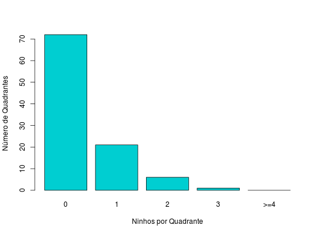

Estudo sobre como se dispõem os ninhos de formigas da espécie Acromyrmex striatus, uma espécie de formiga cortadeira, em dunas da praia de Joaquina, Florianópolis, SC. A condução do estudo se deu em uma área de 10.000\(m^2\) que foi subdividida em 100 quadrantes de mesmo tamanho. Contou-se então, o número de ninhos em cada um desses quadrantes. Maiores detalhes sobre esse estudo estão em Lopes (2001).
Um data.frame com 5 observações e 2 variáveis, em que
ninhosfreqninhos ninhos de formiga.Andrade, D. F., Ogliari, P. J. (2010). Estatística para as ciências agrárias e biológicas com noções de experimentação (2nd ed.). Florianópolis, SC. Editora da UFSC. (Exemplo 4.11, pág. 228)
[REFERENCIAR O TRABALHO DO LOPES DE 2001]
data(AndradeEg4.11) str(AndradeEg4.11)#> 'data.frame': 5 obs. of 2 variables: #> $ ninhos: Factor w/ 5 levels "0","1","2","3",..: 1 2 3 4 5 #> $ freq : int 72 21 6 1 0# Distribuição de frequências barplot(AndradeEg4.11$freq, col = "darkturquoise", names.arg = AndradeEg4.11$ninhos, xlab = "Ninhos por Quadrante", ylab = "Número de Quadrantes")